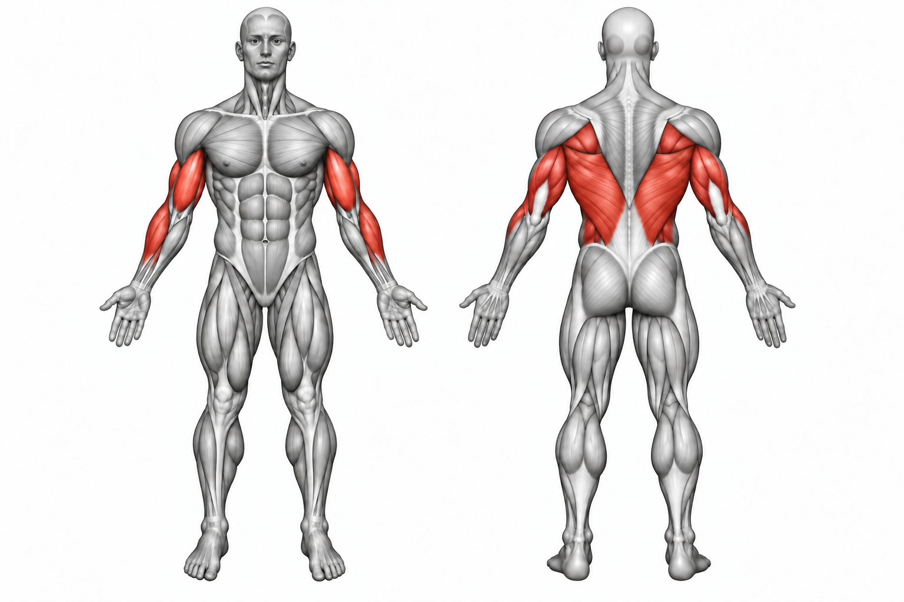
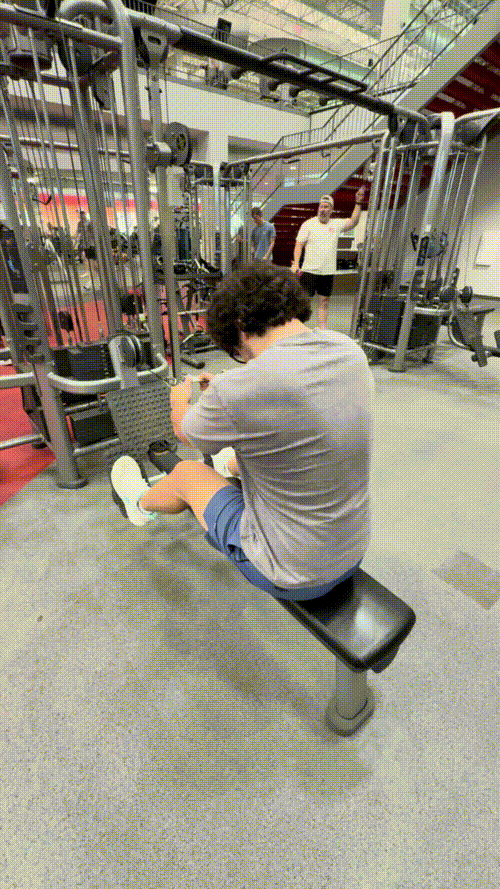

Cable Row


How to Perform
Sit at the cable row station with your feet supported and your knees slightly bent. Grip the handle with both hands and sit upright with your arms extended.
Pull the handle toward your lower chest or upper abdomen by driving your elbows backward. Squeeze your back at the end of the movement, then slowly extend your arms to return to the starting position.
Primary Muscles
Latissimus dorsi (Lats)
Secondary Muscles
Rhomboid major (Rhomboids), trapezius (Traps), posterior deltoid (Rear Delt), and biceps brachii (Biceps)